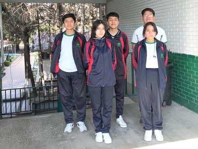

Practica 3
Integrantes del equipo:
Aexis Juarez Ruiz
Samantha Carreto Corte
Jarin Hazan Aleman Cobaxin
Jennifer Itzamar Vargas Inocente
Efren David Morales Gonzalez
Julissa Cisneros Peña
Grupo: 603
Fecha: 08/03/2023
OBJETIVO DE LA PAGINA
El alumno aprenderá a identificar los diferentes tipos de sistemas de
medicion de algulos,
radianes, sistema sexagesimal, sistema centimal y
milesima artillera.
OBJETIVO GENERAL
Analizar el uso de la configuración espacial y sus relaciones, atraves de las formulas del perimetro,
aréa y suma de sus ángulos internos de poligonos para representar el uso de los elementos del ángulo,
segmento, polígono, circulo y sus relaciones metricas.
FOTO DE EQUIPO
